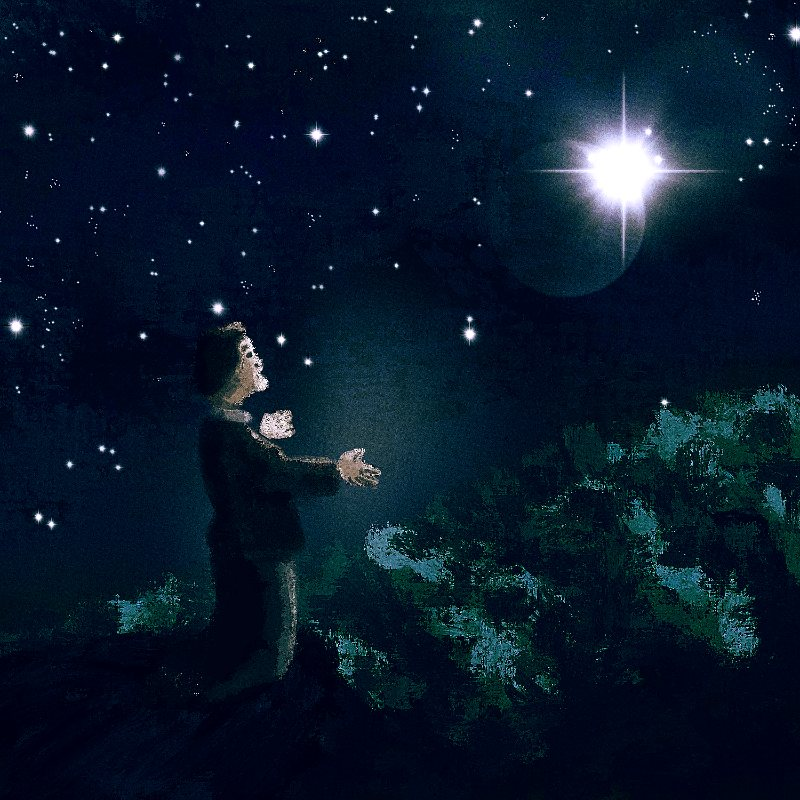

Creacover 2019 : J20
La musique du jour est Oh Marie de Kevin Sur.
Elle appartient aux genres pop, folk, country, accoustic, ce qui fait d’elle une chanson triste et finalement, un peu ennuyeuse. J’ai essayé d’en dégager un côté amusant en faisant le parallèle avec la chanson de Ray, Ma belle Evangeline, dans le dessin animé La princesse et la grenouille de Disney. Dans cette chanson, pas très joyeuse quand-même, la vieille luciole du bayou déclare son amour à l’étoile la plus brillante du ciel en pensant qu’il s’agit aussi d’une luciole. C’est une chanson marrante parce que le vieux Ray a un drôle d’accent et que les grenouilles commentent et dansent.
Sur mon dessin, le pauvre gars chante à l’étoile, Marie, toute sa peine. C’est un peu comme s’il priait.
Le traitement des couleurs de nuit me paraît encore assez difficile à gérer.
